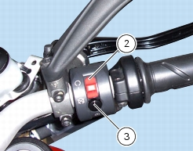
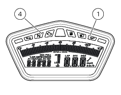

2 -
Starting - Engine warm-up
Starting the engine
This motorcycle is equipped with an automatic starter (stepper motor). This allows automation of the engine warm-up procedure.
Refer to Section M 3,
Stepper motor
, for details of stepper motor operation.
Turn the ignition switch to ON.
Check that both the green N neutral light (4) and the red oil pressure red light (1) on the instrument panel turn on (Sect.
P 7,
Instrument panel
). Check that the stop switch (2) is positioned to
(RUN), then press the starter button (3).
Allow the engine to start on its own, without turning the throttle twistgrip.

Important
The oil pressure light should go out a few seconds after the engine has started. If the light stays on, stop the engine and check
the oil level (Sect. P 7,
Instrument panel
).
Never start the engine when the oil pressure is too low.

Important
Do not run the engine at high speed when cold. Allow some time for the oil to warm up and reach all points that need lubrication.
Warning
The engine can be started with the side stand down and the gearbox in neutral. When starting the engine with a gear engaged,
pull the clutch lever (in this case the side stand must be in the raised position).
1